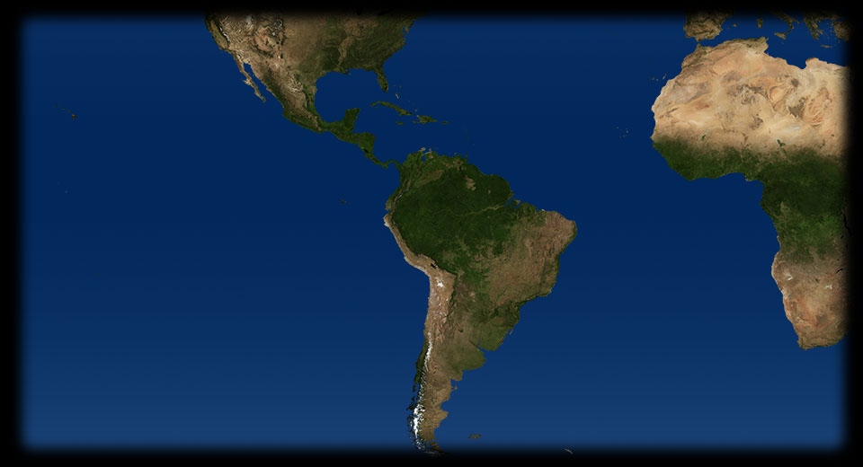
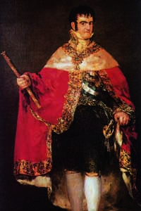
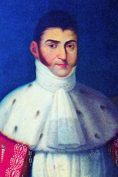
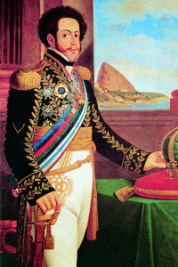
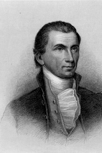

- 0 765
- 85 320
- 240 580
- 10 430
- 165 450
- 20 740
- 
CADICE
Il grande pittore spagnolo Francisco Goya y Lucientes ritrae con spietato realismo il re Ferdinando VII, mettendone in luce lo smodato lusso nella ricchezza degli abiti, ma anche, al contempo, la sgraziata costituzione fisica e la goffaggine nel portamento. - 
MESSICO
Un ritratto di Augustìn de Itùrbide dopo la proclamazione ad imperatore del Messico: l’indipendenza del paese nasce dalla rivolta antispagnola che egli stesso aveva guidato. Insieme al clero e ai latifondisti creoli, Augustìn de Itùrbide proclama nel 1821 l’indipendenza del Messico, che si costituisce come una repubblica federale. - 
BRASILE
1822: Il Brasile acquisisce pacificamente l’indipendenza. Dom Pedro I de Alcantara, figlio del re portoghese Joao VI, dichiara l’indipendenza del brasile e ne viene incoronato imperatore: lo vediamo qui in un aulico e piatto ritratto dell’Ottocento. Il Brasile sarà un impero fino al 1889, in seguito diventerà una Repubblica. - 
WASHINGTON
1823: Dottrina Monroe. James Monroe, quinto presidente degli Stati Uniti d’America, in un ritratto ottocentesco. Il presidente dichiara, in un discorso alla nazione, che gli Stati Uniti non si sarebbero più intromessi negli affari europei, e che non avrebbero più tollerato interventi europei nelle Americhe. La dottrina Monroe è sintetizzata nella frase “l’America agli americani” COLOMBIA
1819: Simòn Bolìvar costituisce la Repubblica federale della Grande Colombia, che riunisce gli attuali Ecuador, Colombia, Venezuela. Seguendo il modello nordamericano della confederazione di stati, Simòn Bolìvar intende rafforzare economicamente e politicamente il Sud America. Diventa il primo presidente della repubblica federale.CADICE
1820: Ferdinando VII, restaurato al trono in Spagna dal Congresso di Vienna, tenta una spedizione oltreoceano per bloccare le insurrezioni, ma viene bloccato a Cadice a causa dell’insurrezione delle truppe spagnole.